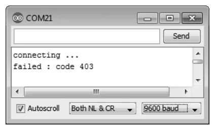

You can control your Arduino from a web browser in several different ways. After doing some research, I’ve found a method that is reliable, secure, and free: Teleduino.
Teleduino is a free service created by New Zealand Arduino enthusiast Nathan Kennedy. It’s a simple yet powerful tool for interacting with an Arduino over the Internet. It doesn’t require any special or customized Arduino sketches; instead, you simply enter a special URL into a web browser to control the Arduino. You can use Teleduino to control digital output pins and servos, or to send I2C commands, and more features are being added all the time. In Project 62, you’ll learn how to configure Teleduino and remotely control digital outputs from a web-enabled device.
